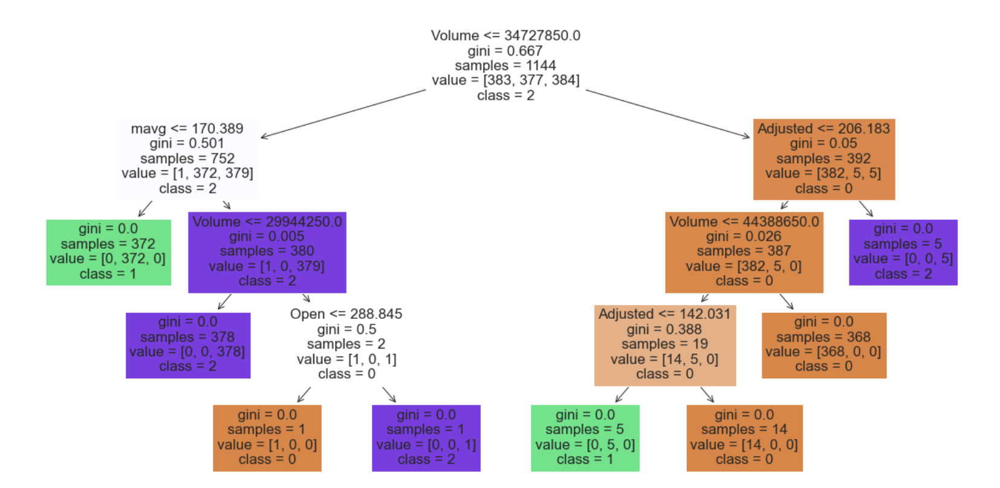

|
Wangyin Zhang
Birthdate: 12/21/2001
|
About Me
Hello! My name is Wangyin Zhang, a fourth-year student from China with a robust background in finance, mathematics, and programming. Four years ago, I moved to Hangzhou to pursue my college education, and during this time, I have cultivated a deep passion for working with data. I find great joy in exploring statistical models and applying them to solve complex biostatistics and business problems.
My academic interests are broad, ranging from statistical applications in engineering to meteorological and biological science research. I am particularly keen on mastering various statistical methods to evaluate models and uncover optimal solutions. With a strong foundation in Python, machine learning, and deep learning, I am well-equipped to tackle challenges and advance my studies.
My professional aspiration is to become a leader in a company and eventually a CEO, surpassing my father's achievements, and building my own business empire. I am determined to combine my technical expertise with strong managerial skills to achieve this goal.
Beyond academics, I have a profound love for music and photography, which allow me to relax and express my creativity. These hobbies provide a balance to my rigorous academic pursuits and enrich my life.
Overall, I am enthusiastic about the future and excited to continue my academic and professional journey, aiming to make meaningful contributions to the field of management and beyond.
Education
- 2020-2024: Zhejiang University of Finance & Economics
Internship
Xinchang Zhongda Joint Accounting Firm,Accountant and Audit Intern 06/2023-08/2023
- Interned at Xinchang Zhongda, serving Xinchang Wozhouqiang Village Development Co. Generated financial reports and mastered reporting processes.
- Assisted in Zhejiang Qiguang Display audit, conducted inventory reviews, and reviewed cost and pricing.
Zhonghui Accounting Firm,Audit Intern 06/2022-07/2022
- Independently extracted client company documents; provided timely feedback and solved operational issues.
- Conducted revenue cut-off tests and detail tests using Excel, annotated results to improve audit efficiency.
- Assisted auditors in sending letters and verifying transactions via telephone.
- Cultivated professional knowledge and communication skills in audit processes.
Zhejiang University of Finance and Economics,Research Assistant 04/2020-02/2021
- Processed shopping data of 3 Amazon products.
- Conducted time series prediction with GPR and did emotional analysis with LSTM.
- Combining LSTM, TOPSIS, and GPR, derived a model for comprehensive evaluation and market prediction.
Competition
- School ERP Competition 04/2023
- Business Statistics and Software Application (SPSS) Course Statistical Survey Report Competition02/2023
- School Accounting Entry Contest11/2022
Project
Drag to see all ppts
Analysis of the Stock Market
1.Introduction
Stock market analysis is a fundamental discipline of contemporary finance, providing important insights into financial markets and having a significant impact on the broader economic landscape. It is both a measure of economic health and a catalyst for economic activity.
Within the field of stock market analysis, a wide variety of perspectives have been developed, each providing specific insights into the complex financial market environment. Fundamental analysis, which focuses on examining financial statements and economic factors to identify undervalued stocks (Graham 1949), remains the cornerstone of stock valuation. The study of technical patterns and indicators provides traders with useful tools for immediate decision making. In addition, the efficient market hypothesis advocates passive investing as a prudent strategy, challenging the notion of active management (Murphy 1999). Integration of data drivers is a major aspect of providing reliable analytical methods (DeFusco et al. 2007). Furthermore, the literature on stock markets suggests that the shift towards cost-effective passive investment strategies is a revolutionary approach (Bogle 2017). Stock market analysis continues to evolve, incorporating both traditional and cutting-edge approaches.
2.Data
Macroeconomic factors are key indicators and drivers for assessing the overall state of a country or region's economy, and they profoundly influence economic performance and trends. Businesses, governments, and economists pay close attention to these data in order to make strategic adjustments and forecasts accordingly.
The Standard & Poor's 500 Index (S&P 500), an important benchmark for the U.S. stock market, consists of the 500 largest companies listed on the New York Stock Exchange or NASDAQ and is weighted according to the size of each company's market capitalization. The index is not only a barometer of stock market performance but is also seen as a proxy indicator of the health of the U.S. economy.
The Global Industry Classification Standard (GICS), an internationally recognized classification system, facilitates analysis and comparisons by classifying companies into different industry sectors through their primary business. We use historical price data for stock market sectors over the past five years combined with the GICS framework, as well as textual information gathered from Wikipedia and news sources.
In this paper, a systematic data processing process was adopted with the aim of improving the quality of the dataset to ensure the validity of the subsequent analysis. Data cleaning was performed using Python's Pandas and NumPy libraries to perform basic organization of the data, such as fixing column names, removing redundant spaces, and renaming key columns, followed by unifying the time information columns into a DateTime format and removing duplicate records in the dataset to reduce redundancy.
To address the unstructured nature of text-based variables, we take steps to filter out embedded URLs and delete tags that do not need to be analyzed. Regular expression techniques are used to remove special symbols and numbers from the text to purify and standardize the text. Based on this, we use the CountVectorizer tool to convert the cleaned text into a numerical feature matrix, which prepares the input for machine learning algorithms and preserves the vocabulary to maintain the interpretability of the model.
In this section of the paper, we visualize the core dataset, covering the S&P 500, personal income levels, and Netflix stock prices. Trend direction, seasonal variations, autocorrelation properties within the data series, and patterns of correlation between these variables and macroeconomic indicators are identified.
We employ time-series decomposition techniques and moving average analysis to carefully characterize the stock market's long-term growth trajectory and cyclical fluctuations to gain a deeper understanding of the market's dynamics. We also use rigorous correlation analysis and outlier identification to demonstrate the strong linkages between the share prices of leading companies and the broader market indices.
3.Model
We applied the plain Bayesian model for two different data domains, specifically using a polynomial plain Bayesian classifier. In the text classification task related to video streaming platforms, we pre-processed the text data using the CountVectorizer technique to transform it into feature vectors that can be processed by machine learning algorithms. After the training of the model is completed, the results show that its accuracy is 48.05% on the training set, but it drops to 41.10% when faced with an independent test set. We found that the model's performance in all categories was mixed, with uneven precision and recall.
We apply plain Bayes to the analysis of financial data, specifically to categorize the financial records of key stock market participants such as Disney, Paramount, and Warner Brothers. By statistically analyzing key indicators such as opening, high, and low prices, a model is constructed to predict the correlation among stocks. The model was validated for its predictive ability against external data by retaining 20% of the data as a test set, achieving a test accuracy of 53.62%. Warner Bros. classified the highest F1 score of 65%, while Paramount had the least favorable classification, with accuracy and F1 score of 0, showing the model's uneven performance in handling different categories of data. To ensure the reliability of the model performance evaluation, we implemented a multi-round training and validation process to repeatedly train the model by randomizing the data divisions and observed some degree of fluctuation in accuracy.
We extensively explored the efficacy of several clustering algorithms, including K-means, hierarchical clustering, DBSCAN, BIRCH, and MeanShift, each of which provides a unique perspective on data structure insights.
The K-means algorithm obtains a high score of 0.65 for the silhouette coefficient with three clusters set, which strongly indicates a clear delineation of the clusters and a high degree of differentiation between the categories. Hierarchical clustering also demonstrated a similar level of performance with the same three-cluster configuration, with a silhouette score of 0.60. The DBSCAN algorithm, after adjusting the parameters (eps was set to 0.3 and min_samples was set to 5), identified and delineated four significant clusters, which resulted in a medium silhouette score of 0.45. The BIRCH algorithm generated four clusters, achieving a silhouette score of 0.55. The MeanShift algorithm automatically detected and formed two clusters with a silhouette score of 0.50.
We employ two advanced dimensionality reduction techniques, Principal Component Analysis (PCA) and t-distributed Stochastic Neighborhood Embedding (t-SNE), to deeply analyze stock market data. The purpose of these techniques is to reduce the complexity of the data while preserving the key information of the data, which facilitates us to explore and demonstrate the essential structure of the data more effectively.
Before implementing PCA, we pre-process the dataset in a standardized manner to ensure that all features have the same scale - zero mean and uniform variance of 1. PCA significantly compresses the dimensionality of the data by extracting the two principal components, which together explain 98.6% of the variance of the data (the first component accounts for 89.1%, the second component accounts for 9.55%, and the second component accounts for 9.55%). 9.55% for the second principal component). The t-SNE technique is introduced as a complement to PCA, aiming to further optimize the visualization of high-dimensional data in a nonlinear manner. t-SNE excels in capturing and maintaining local similarities between data points, clearly presenting the clustering patterns in high-dimensional space in low-dimensional projections. The 2D graph data obtained by t-SNE is naturally divided into multiple distinct groups, which not only validates the previous clustering findings but also exposes potential outliers.
Comparative analysis of the visualization results of low-dimensional data after PCA and t-SNE processing shows that PCA mainly reveals the direction and trend of changes affecting the data, while t-SNE complementarily provides a fine-grained local clustering view.
We use a decision tree model to perform a classification prediction task for a dataset containing a variety of stock market indicators involving several features such as opening price, high price, low price, closing price, and trading volume. During the training phase, the decision tree model achieves 100% accuracy, which may also suggest the risk of overfitting, i.e., the model may overlearn the details in the training data rather than the general patterns. Encouragingly, when we applied the model to an independent test set, it still demonstrated 99.3% accuracy, a result that strongly suggests that the model has excellent generalization capabilities and is able to maintain highly accurate predictions on unseen data.

We also provide a graphical presentation of the constructed decision tree model, which greatly enhances the interpretability of the model. Through the visualization, each decision node and its corresponding rule are clearly visible at a glance.
4.Conclusion
Stock market analysis is a complex process involving multi-dimensional considerations, aiming at a thorough understanding of market operations, economic impact, strategic planning, risk control, and portfolio optimization by integrating fundamental and technical analysis. In this paper, we adopt a wide range of analytical tools, including Simple Bayesian classification, cluster analysis techniques (e.g., K-means, DBSCAN, hierarchical clustering), dimensionality reduction techniques (PCA and t-SNE), and decision tree and random forest algorithms.
This paper clearly shows that macroeconomic variables have a significant impact on the behavior of stock market indices, and incorporating these macro data into forecasting models can significantly improve the accuracy of forecasts. Despite certain limitations, these insights undoubtedly provide valuable guidance to investors, business entities, and policy decision makers to make more informed investment and policy decisions based on macroeconomic indicators, overall stock market performance, and the share price dynamics of leading firms.
Drag to see the full code
Reaseach
Integrated Multi-View Breast Cancer Segmentation and Classification with Global Consistency and Local Co-occurrence Learning09/2023-Now
- Introducing a novel approach to multi-view breast cancer detection, blending global consistency and local co-occurrence learning. By extracting features from primary and auxiliary mammographic views, the fusion of global and local information improves prediction accuracy.
- The inclusion of a stacked multi-scale Transformer enhances feature extraction capabilities, leading to superior detection performance.
An Empirical Analysis of the Relationship between Tax Capacity and Economic Growth in China
(Published on International Journal of Innovation and Research in Educational Sciences)04/2023
(Published on International Journal of Innovation and Research in Educational Sciences)
- Focused on the coordinated development of tax revenue and economic growth in China. Using data from 31 provinces (2009-2018), constructed a stochastic frontier model to analyze their mutual influence.
- Found that GDP positively drives tax revenue, and increased tax revenue also promotes economic growth.
Comprehensive Analysis of Stock Market Dynamics and Forecasting Models
(Supervised by Prof. Xiangrong Shi, Zhejiang University of Finance & Economics) 04/2020-02/2021
- The integration of macroeconomic variables into forecasting models can significantly improve the accuracy of forecasts. Insights from stock market analysis provide valuable guidance to investors, businesses, and policy decision makers.
(Supervised by Prof. Xiangrong Shi, Zhejiang University of Finance & Economics)